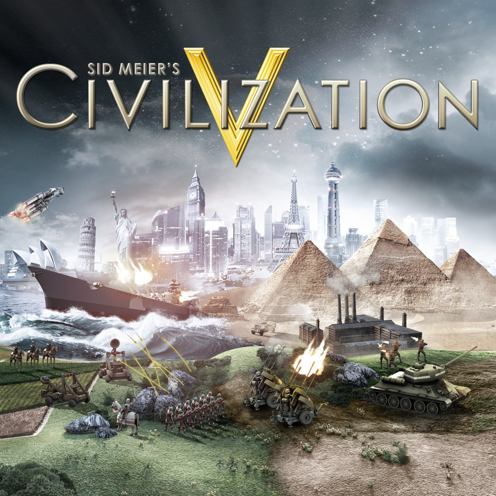
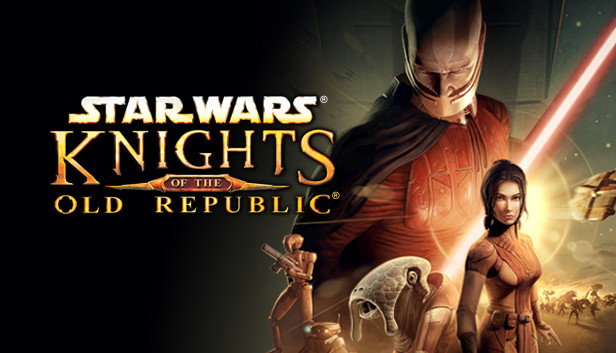
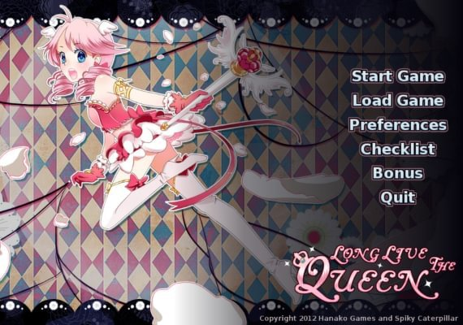
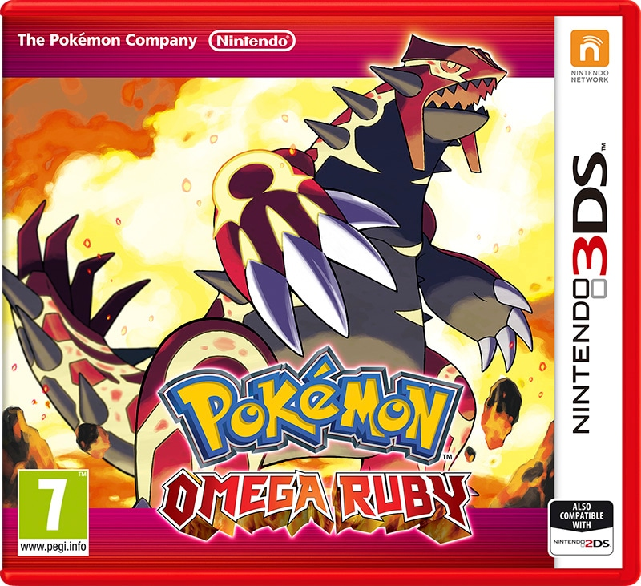

What are my hoppies?
Well, I have 2 main hobbies. Which is:
Gaming and drawing
Depending on my mood it depends on which one of my hobbies I do. Like if I'm happy than I usual be drawing my avatar. And if I'm bored than I play a game, either on my PC, nintendo switch or my 3Ds. The games I normally play are 1 player games and role-playing. I really like to play games alone, beacuse if a game is multiplayer than you could expect people to point out then you do something bad/embarrassing. And I really hate that, even if just a joke. So I just play games that are made for one player.
The games I listed down here are my favorites at the moment. I won't write down why I love the games but I think you will see a pattern between them and figure it out.
Down the site I will show some exemples on what kind of drawings I draw, games I play, manga/comics I read and movies I watch
Here are some of my drawings:

Games that I play/my favorite games to play
Click on the game titles to know a little more about the games
Fire Emblem: Three Houses

Fire Emblem is 1 player, Adventure, Tactical Role-Playing game and was published worldwide by Nintendo on July 26, 2019
The game takes place on the continent of Fódlan. The landmass is divided into three rival nations who are now at peace: the Adrestian Empire to the southwest, the Holy Kingdom of Faerghus to the north, and the Leicester Alliance to the east. At the center of the continent is the Garreg Mach Monastery, a neutral territory home to both the Church of Seiros and the Officers Academy. The game's "Three Houses" refer to the three boarding houses of the academy, the Black Eagles, the Blue Lions, and the Golden Deer, each populated with students from the three main nations. Additionally underneath Garreg Mach Monastery is a place for rejects of society called Abyss, and a house in name alone, the Ashen Wolves.
In ancient times, a war raged between the Church's titular founder Seiros and the "Liberation King" Nemesis, an era which also saw the establishment of the Empire. In the thousand years since then, the Kingdom split away from the Empire, then the Alliance declared its independence from both powers. A prolonged conflict ensued, with the Church being responsible for maintaining peace. Key to the nations of Fódlan are Crests, magical sigils passed down through families that play key roles in the continent's history and politics.
The game is set during two time periods. The first begins in Imperial Year 1180, during the characters' time as students at the Officers Academy. The story then jumps five years later to the time of a promised reunion between students, only for the three nations to now be seemingly at war with each other.
Sid Meier's Civilization V
Sid Meier's Civilization V (called Civilization V or Civ5 for short) is a 1 player, turn-based strategy game and was released on September 21, 2010.
There are eighteen civilizations available from the start of Civilization V, and seven additional civilizations are made available later through several small DLC add-ons. Nine more civilizations were added with the Gods & Kings expansion pack, and nine other civilizations were added with the Brave New World expansion pack, bringing the total number of civilizations to 43, the greatest number of civilizations that has ever been available in any Civilization game.
This is the first incarnation of the series where the leaders speak in their native language in a fully animated diplomacy screen. This only applies to the audio; all text is in the language selected.
Star Wars: Knights Of The Old Republic
Star Wars: Knights of the Old Republic (KotOR) is a 1 player, roleplaying game and was released to PC November 19, 2003
KotOR is the first computer RPG set in the Star Wars universe. It uses the d20 System, from the Wizards of the Coast Star Wars Roleplaying Game rules. The game also allows the player to either be a servant to the light side of the Force or the dark side, using an alignment system that tracks actions, from simple dialogue choices to major plot decisions. Combat is turn-based. Time is divided into discrete rounds, and combatants attack/react simultaneously. However, the number of actions a combatant may perform each round is limited. While the round's duration is a fixed short interval of real time (around six seconds), the player can configure the combat system to pause at specific events or at the end of each round.
This is based on the canonical male light side version of the game and assumes that the planets are visited in the order Dantooine, Tatooine, Kashyyyk, Manaan, then Korriban. Gender, order of planets visited and other variables can differ depending on the input of the player.
Long Live The Queen
Long Live the Queen is a 1 player, visual novel role-playing video game. It was released on June 2, 2012. The game uses anime-style graphics and is written in English.
The queen of Nova has recently died, and her daughter, the 14-year-old princess Elodie, must leave her schooling to ready herself to become the next queen. Her coronation is set for 40 weeks from the present—her 15th birthday. Many people in the kingdom are trying to take advantage of the recent monarch's death and attempt to kill Elodie.
The player reads through the story and schedules the protagonist's weekly lessons, in topics such as economy, foreign affairs, logistics, expression, military matters, self-defense, intrigues, doublespeak and magic. Based on those activities, Elodie increases her proficiency in various statistics. Additionally, during the weekend Elodie has free run of the castle and can choose an activity that alters her mood. She has four emotional axes, and her position on each determines her proficiency at learning certain topics: for instance, being "Willful" will help her master military and intrigue skills easier, but it will also hamper learning civil skills like royal demeanor. Once all three sub skills of a particular skill are raised to a certain point (around 30 each), Elodie gains an outfit that boosts that specific skill. Learning some skills unlocks additional weekend actions: for example, learning "Dance" allows her to attend balls, while "Reflexes" gives her the ability to play tennis.
Pokemon: Omaga Ruby
Pokemon: Omega Ruby is 2014 enhanced remakes of the 2002 role-playing video games Pokémon Ruby. The game is part of the sixth generation of the Pokémon video game series
The setting and story of Omega Ruby and Alpha Sapphire are largely the same as the original Ruby game. The game begin as the player is seen riding in the back of a moving truck. The player character starts by moving to the Hoenn region from the Johto region with their mother, as their father Norman has been hired as the leader of the Petalburg City Gym. The player arrives with their parents at the family's new home in the village of Littleroot Town, on the southern edge of the main island. The player character begins their Pokémon Trainer journey by saving Professor Birch, the leading scientist in the Hoenn region, from a wild Pokémon, choosing either Treecko, Torchic or Mudkip to defend him. Following the defeat of the wild Pokémon, the player receives the chosen Pokémon as their starter. They then travel around Hoenn to complete their Pokédex and battle the eight Gym Leaders of the Hoenn Pokémon League.
Along the way, the player character encounters the antagonist group Team Magma in Omega Ruby who wish to use the power of the legendary Pokémon, Primal Groudon in Omega Ruby, to change the world to suit their desires. Team Magma wants to use Groudon to dry up the oceans and expand the landmass, thereby allowing humanity to progress further. With the help of Hoenn League Champion Steven Stone and the Gym Leader Wallace, the player defeats their respective team and then either captures or defeats the legendary Pokémon to prevent a global drought / heavy rainfall and thus ensuring the teams' mutual reformation. The player then advances on to the Pokémon League, challenging the Elite Four and then the Champion, Steven, to become the new Hoenn Pokémon League Champion. The player also has the option of participating in the various Pokémon Contests throughout Hoenn, using their Pokémon to put on a performance for an audience and judges.